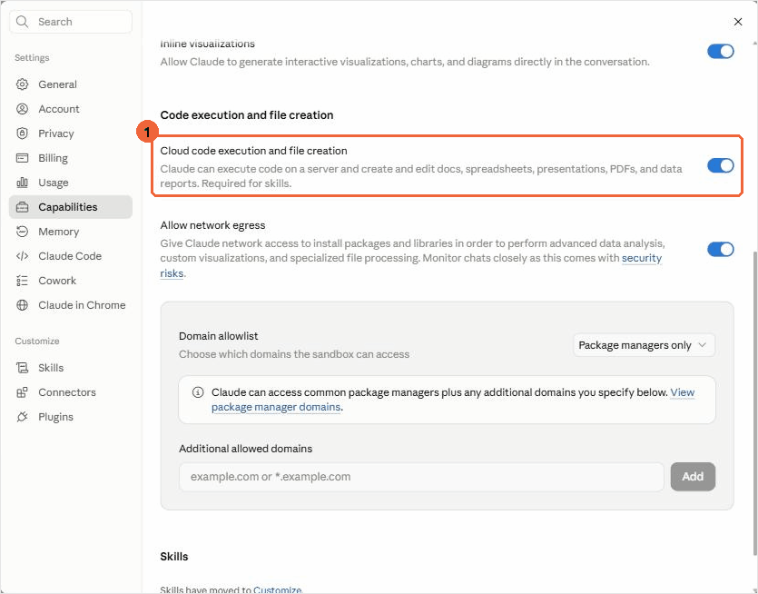
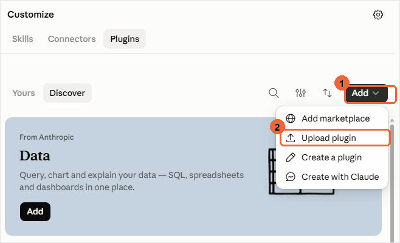
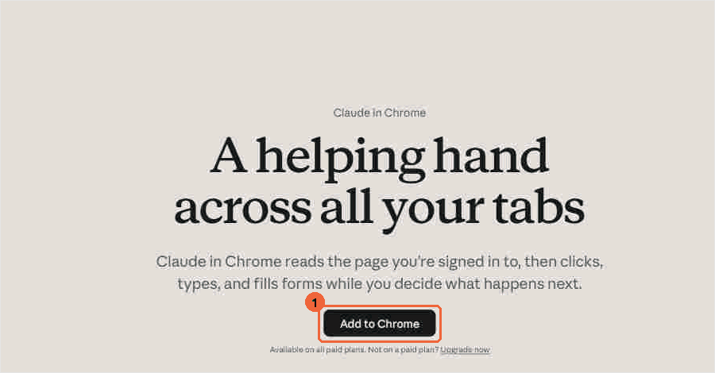
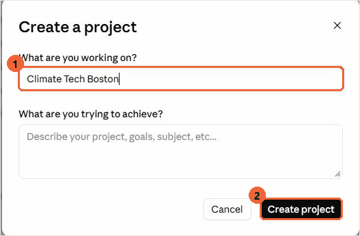

Step 02 of 05, once
What you install
Three packages and a browser extension. A paid Claude account. No code.
ctc-newsletterFinds sources, collects events and reader submissions, builds the issue.Plugin, 5 skills
ctc-partner-mapResearches your city, says who to approach, drafts the emails. Optional.Plugin, 3 skills
Claude for ChromeLuma, Eventbrite and the submission form need a real browser.Extension
All three are plugins: a zip you upload once that brings its skills with it. Claude for Chrome is required for the weekly harvest. Download all three zips first; the steps below upload them.
-
Turn on code execution
Open claude.ai/settings/capabilities. Make sure Cloud code execution and file creation is on. Skills need it.

Settings, then Capabilities. 1 The switch that has to be on. It usually already is. -
Upload the three plugins
Open claude.ai/customize/plugins. Add, then Upload plugin. Once each for ctc-chapter-setup, ctc-newsletter and ctc-partner-map.

Customize, then Plugins. 1 Add. 2 Upload plugin. Do it three times. -
Install Claude for Chrome
Open claude.ai/chrome, then Add to Chrome. Sign in with the same account.

The one button. The weekly harvest reads Luma and Eventbrite through this. -
Create a project
Open claude.ai/projects, then New project. Name it Climate Tech [your city]. Everything from here on happens inside it.

1 The name. 2 Create. The second box can stay empty. -
Check it worked
Verify installWhich Climate Tech Cities skills do you have available?
Claude should name ctc-chapter-setup and the skills in the other two plugins. If not: check step 1, upload again, and start a fresh conversation. Skills do not appear mid-conversation.